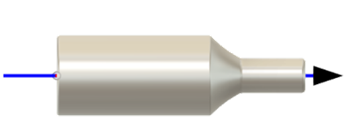

<div id="rotary_finishing_overrideRotaryToolView"><p><b>回転軸</b> の方向を、マシンの回転軸のセットアップと一致するように設定します。</p>
<table class="tipTable" cellspacing="10">
<tr>
<td><center></center></td>
</tr><tr>
<td><center></center></td>
</tr></table>
</div>